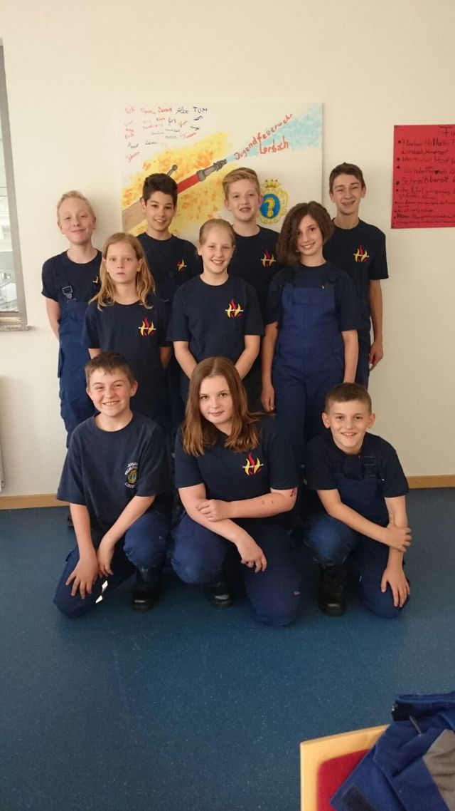
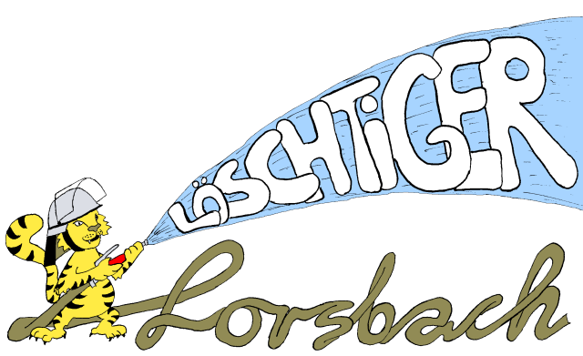

Nachwuchs
Jugendfeuerwehr & Löschtiger.
Feuerwehr fängt nicht erst mit 17 an. Bei uns können Kinder ab 6 Jahren dabei sein, und viele unserer heutigen Aktiven haben genau so angefangen.
10 bis 17 Jahre
Jugendfeuerwehr
In den Gruppenstunden bereiten wir Mädchen und Jungen theoretisch und praktisch auf den späteren Einsatzdienst vor. Gelerntes wird direkt in Übungen umgesetzt.
Dazu kommt alles, was eine Gruppe zusammenschweißt: Zeltlager mit dem Stadtverband der Jugendfeuerwehren Hofheim (im Wechsel mit einem Freizeitpark-Ausflug), die jährliche Christbaumsammlung, der Tag der offenen Tür und der Berufsfeuerwehrtag, an dem ihr 24 Stunden lang erlebt, wie der Alltag auf einer Wache aussieht.
Mit 17 könnt ihr in die Einsatzabteilung wechseln. Die Jugendfeuerwehr gibt es seit 1999.
Dienstags 18–20 Uhr, außerhalb der Schulferien, im Feuerwehrhaus
Komm einfach zu einer Schnupperstunde vorbei. Fragen an jugend@feuerwehr-lorsbach.de.


6 bis 9 Jahre
Kinderfeuerwehr Löschtiger
Bei den Löschtigern gewinnen Mädchen und Jungen erste Einblicke in die Feuerwehr. Mit unserer Löschkarre haben wir alles dabei, was auch auf den großen Fahrzeugen zu finden ist, nur eine Nummer kleiner.
Wir lernen, was man im Brandfall richtig macht und wie die Handgriffe der Feuerwehrleute funktionieren. Der Spaß kommt nicht zu kurz: Einmal im Jahr übernachten wir im Feuerwehrhaus, und es gibt gemeinsame Film-Nachmittage, Grillen und Eis essen.
Aufnehmen können wir Kinder ab 6 Jahren, die schon zur Schule gehen. Mit dem 10. Geburtstag geht es in die Jugendfeuerwehr.
Jeden zweiten Samstag in der Schulzeit, 16–17:30 Uhr, im Feuerwehrhaus
Fragen an loeschtiger@feuerwehr-lorsbach.de. Das Betreuerteam: Ole Peters, Leon Ayres-Jones, Marius Pfeifer und Paul Singer.